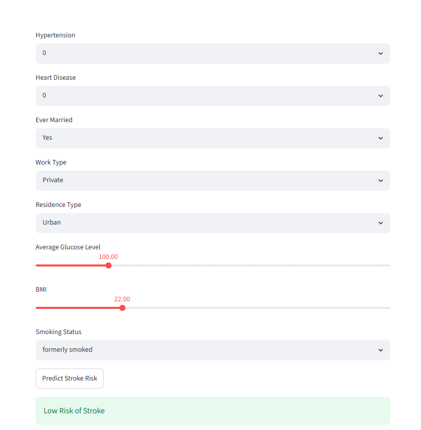

MS in Data Science with experience in SQL, Python, Power BI, Machine Learning, and Data Visualization.
Built a customer segmentation and campaign analytics dashboard using SQL and Power BI.

Developed an Excel dashboard for fraud monitoring and risk analysis.

Created an end-to-end machine learning pipeline using XGBoost and Streamlit.

Email: jestin4careers@gmail.com